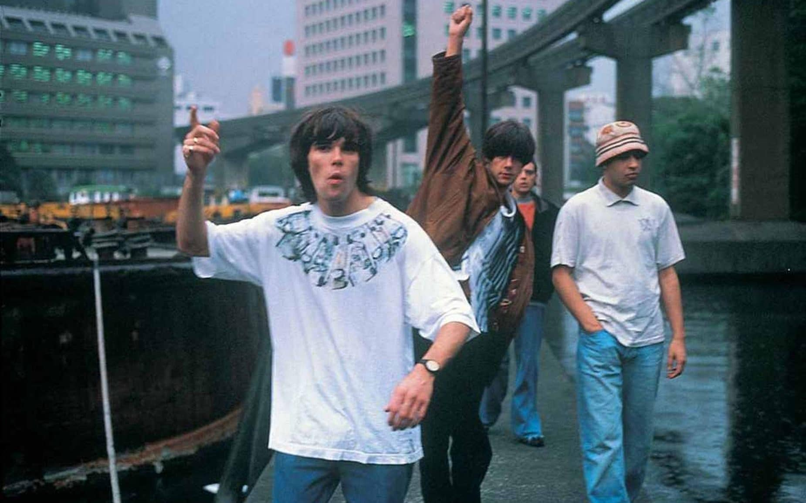
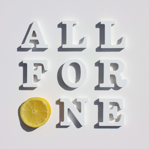
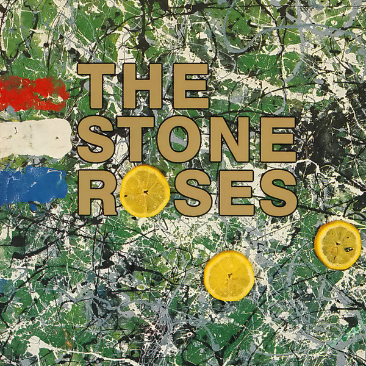
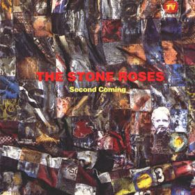
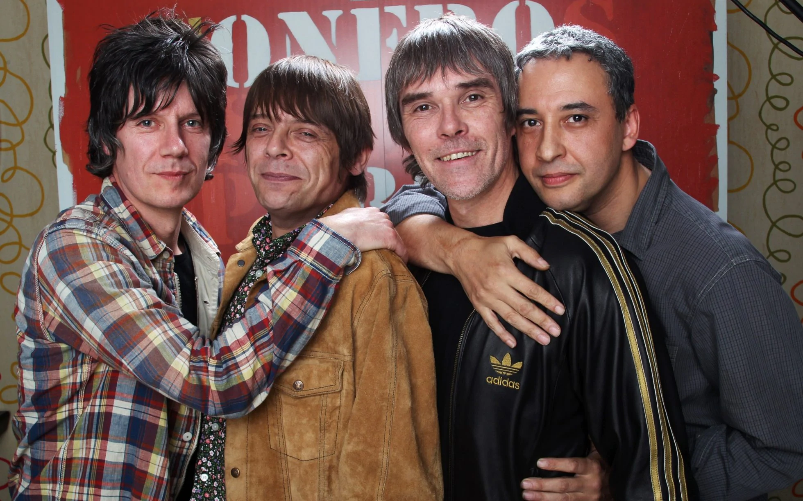

Greatest Hit
The Stone Roses - I Wanna Be Adored Live @ Benicassim 2012
The Stone Roses
Who are they?
The Stone Roses are an Indie Rock band formed in 1983 who originated from Manchester, England.
Band Members
Albums
2016 - All for One
1989 - The Stone Roses Remastered
1994 - Second Coming
